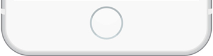

<!DOCTYPE html>
<html lang="ja">
<head>
	<link rel="stylesheet" href="../css/footer.css" type="text/css"></link>
<script type="text/javascript">
function topScroll() {
	alert("homeはまだ使えないよ");
}
</script>
</head>
<body>
	<div id = "footer-fixed">
			</img>
			<div id="homeBtn" onClick="topScroll()"></div>
	</div>
</body>
</html>